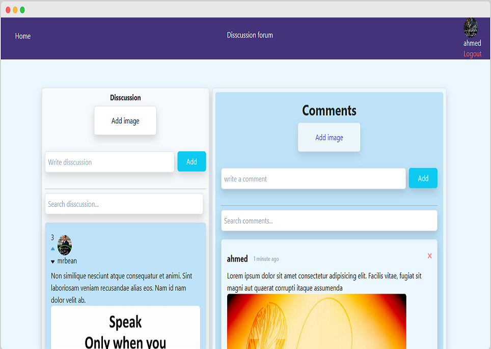

A discussion forum website
This project is to make a disscussion forum website. A discussion forum is a forum website that people can use to discuss different topics. Users can add a discussion topic and can attach an image, and by clicking the discussion any user can add comments. discussion can be upvoted or downvoted while comments are liked or just leave. I used laravel livewire to make this project.
My role in the project
I made this project solo. I made this project mostly from watching tutorial youtube videos, and I have added some exciting features later on.
Problems encountered and their solutions
Adding profile: was hard a bit hard for me, I know how to add a profile for logged user but for non-logged users who posted before, showing their profile after was a bit challenging especially I didn't know about model relationship but after rewatching the video I figured out how to get user data to display.
Adding Votes and Likes: votes and likes are essential for social media so I wanted to add that this feature was solely mine it wasn't in the tutorial video. I made table to add users and the liked image id, and I tried to use relationships like I did with the profile to display the liked icon but their relationship was a bit complex, so after some googling and stack overflowing I found out how to select the liked image id in the collection and check if it contains this image id and it worked. But voting was kind of different because use can upvote or downvote while only like comments, so I needed to know first, I need to know if the user voted or not which I solved before, and second I have to know if the user upvote or downvote for that I collect the ids and used loop and checked if it is up(1) or down(0) vote and it worked.
Live search: The most amazing thing I loved about livewire is its single page application which means you don't need to refresh to see your change it will show you live. so I loved live search but I couldn't do complex coding to do it so I use a simple live search but I am unable to search the user's name which was dissappointing for me it only search the body or the text content.